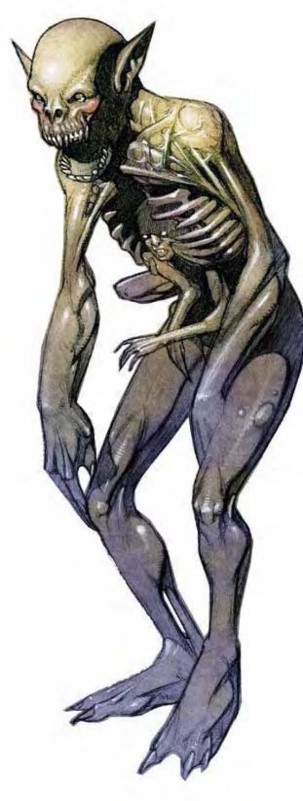

| 资料栏位 | 囚魂尸 (Devourer) 大型不死生物（外界） |
| 生命骰 | 12d12（78HP） |
| 先攻 | +4 |
| 速度 | 30英尺（6格） |
| 防御等级 | 24（-1体型、+15天生）、接触9、措手不及24 |
| 基本攻击/擒抱 | +6 / +19 |
| 攻击 | 爪抓+15近战（1d6+9） |
| 全力攻击 | 2爪抓+15近战（1d6+9） |
| 占据/触及 | 10英尺 / 10英尺 |
| 特殊攻击 | 吸能、囚魂、类法术能力 |
| 特殊能力 | 黑暗视觉60英尺、法术偏转、法术抗力21、不死特性 |
| 豁免 | 强韧+4、反射+4、意志+11 |
| 属性 | 力量28、敏捷10、体质―、智力16、感知16、魅力17 |
| 技能 | 攀爬+24、专注+18、交涉+5、跳跃+24、聆听+18、潜行+15、搜索+10、察言观色+11、侦察+18、生存+3（追踪+5） |
| 专长 | 盲战、战斗施法、寓守于攻、精通先攻、专攻武器（爪抓） |
| 环境 | 任何 |
| 组织 | 单独 |
| 挑战级数 | 11 |
| 宝藏 | 无 |
| 阵营 | 总是中立邪恶 |
| 进化 | 13-24HD（大型）；25-36HD（超大型） |
| 等级修正值 | ― |
高大的骷髅状生物。干枯血肉垂挂于骨骼上。微小人像囚禁于该生物胸腔内，面露痛苦。
高大的囚魂尸，其行为与外貌一般邪恶。他们在灵界与物质界猎食，以残虐取乐心态跟踪原生生物与旅行者。
囚魂尸胸腔内的小人是遭其杀害者的魂魄，像柴火般地消耗以支撑囚魂尸的非自然生命。
囚魂尸约9英尺高，500磅重。
囚魂尸通晓通用语。
战斗即使不管其特殊能力，囚魂尸也是可怕的对手。其骨质爪子可剥下对手一层皮。
吸能（超自然）：被囚魂尸爪抓或"幽灵手"能力击中的活物获得一个负向等级。移除一个负向等级须进行强韧检定（DC=19）。豁免DC的调整值与魅力调整值相同。
囚魂（超自然）：囚魂尸的名字来自其消耗对手魂魄的能力。欲使用囚魂，囚魂尸必须放弃正常近战攻击，改采一次囚魂攻击。囚魂尸进行一次正常攻击检定，但不造成伤害。受影响的生物必须通过强韧检定（DC=19），否则立即死亡。豁免DC的调整值与魅力调整值相同。
被杀害的生物魂魄囚禁于囚魂尸胸腔，其中的微小人像特征即与被杀害者相同。被囚禁的魂魄无法复活或复生，然而，法术"有限愿望"、"奇迹术"、"愿望术"可释放之，摧毁囚魂尸亦可。囚魂尸一次只能囚禁一个魂魄。
消耗被囚禁的魂魄一个HD或等级可让囚魂尸使用5次类法术能力。随着能量消耗，该魂魄亦逐渐扭曲褪色，终至完全消逝。囚魂尸每使用5次类法术能力，该魂魄就获得一个负向等级。当负向等级总数等于该魂魄总HD或等级时，该魂魄即被摧毁。若被释放，该恢复生物必须进行强韧检定（DC=19）以恢复等级，每个负向等级须个别检定，失败即永久失去该等级。
类法术能力：初遭遇时，囚魂尸胸腔中的魂魄等级为3d4+3（可使用类法术能力30至75次）。每轮1次，囚魂尸可使用下列能力之一："困惑术"（DC=17）、"操控死灵"（DC=20）、"食尸鬼之触"（DC=15）、"次级异界誓盟"、"衰弱射线"（DC=14）、"幽灵手"、"暗示"（DC=16）、"真实目光"。施法者等级18。豁免DC的调整值与魅力调整值相同。
法术偏转（超自然）：被囚禁的魂魄也可提供某种程度的魔法防护。若下列法术之一施展于囚魂尸身上，且克服了囚魂尸的法术抗力，则该法术仍无法影响囚魂尸，而改为影响被囚禁的魂魄："放逐术"、"混沌之锤"、"困惑术"、"满怀绝望"、"侦测思想"、"反制邪恶"、"支配人类"、"恐惧术"、"指使术"、"圣言"、"催眠术"、"禁锢术"、"魔魂壶"、"迷宫术"、"暗示"、"锢魂术"或任何魅惑、胁迫法术。许多情况下，偏转法术实际上使其失效（例如：魅惑被囚禁的魂魄是没用处的）。某些情况则可能消灭该魂魄（例如："放逐术"），进而除去囚魂尸的类法术能力直到囚魂尸囚禁另一个魂魄为止。